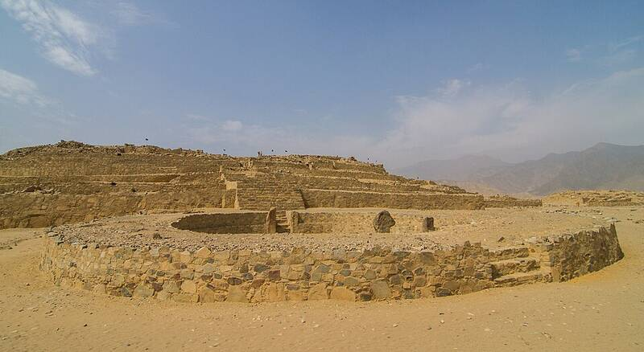

Caral
Supe Valley, Peru, about 2600 BC

One of the oldest cities in the Americas, with large platform pyramids built around the same time as Egypt's Great Pyramid. 1
Open in the interactive Watcher
Sources
- Caral Wikipedia
Supe Valley, Peru, about 2600 BC

One of the oldest cities in the Americas, with large platform pyramids built around the same time as Egypt's Great Pyramid. 1
Open in the interactive Watcher